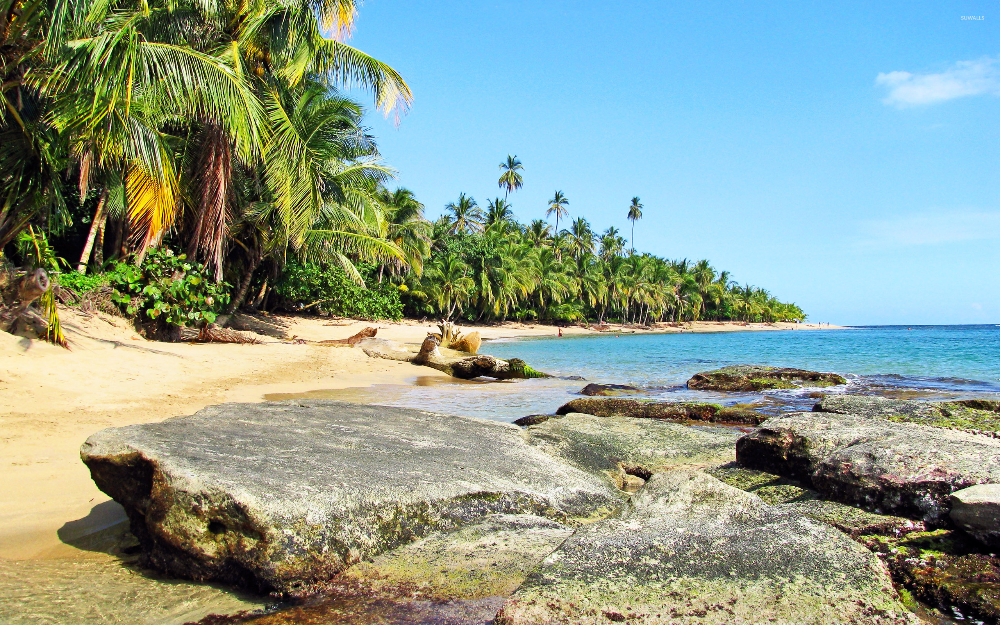

Nuestros Tours

Volcán Arenal
El majestuoso coloso de Costa Rica, rodeado de aguas termales y bosque tropical.
- Duración: 1 día
- Máximo: 20 personas
- Incluye almuerzo

Guanacaste
Playas doradas, puestas de sol espectaculares y cultura guanacasteca.
- Duración: 2 días
- Máximo: 15 personas
- Incluye todas las comidas

Cerro Chirripó
El punto más alto de Costa Rica, donde las nubes tocan la tierra.
- Duración: 2 días
- Máximo: 12 personas
- Incluye todas las comidas

Puerto Viejo
Paraíso caribeño con rica cultura afrocaribeña y playas paradisíacas.
- Duración: 2 días
- Máximo: 15 personas
- Incluye todas las comidas

Manuel Antonio
Donde el bosque se encuentra con el mar, hogar de una increíble biodiversidad.
- Duración: 1 día
- Máximo: 20 personas
- Incluye almuerzo

Monteverde
Bosque nuboso místico con una biodiversidad única en el mundo.
- Duración: 1 día
- Máximo: 20 personas
- Incluye almuerzo
Río Celeste
Descubre las aguas turquesas del río más hermoso de Costa Rica, en el Parque Nacional Volcán Tenorio.
- Duración: 1 día
- Máximo: 15 personas
- Incluye almuerzo

Playa Cahuita
Explora el Parque Nacional Cahuita, con sus playas de arena blanca, arrecifes de coral y selva tropical.
- Duración: 2 días
- Máximo: 15 personas
- Incluye todas las comidas
San José Cultural
Recorre los lugares más emblemáticos de la capital: Teatro Nacional, Mercado Central, museos y más.
- Duración: 1 día
- Máximo: 20 personas
- Incluye almuerzo